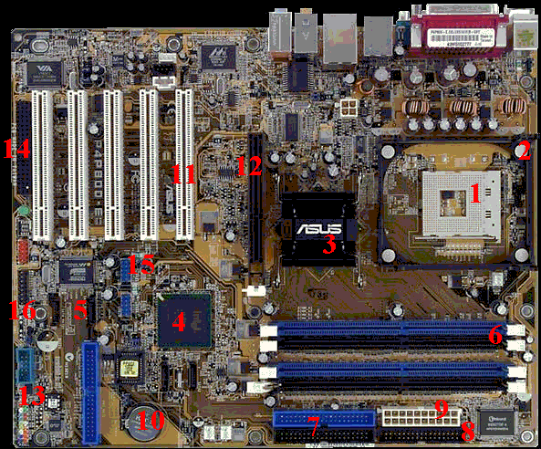

Het moederbord in cijfers

1. De voet waarin de processor geplaatst kan worden (socket voor de Pentium 4)
2. Houder voor de ventilator. De ventilator blaast over de processor.
3. North bridge, die regelt het verkeer tussen processor en intern geheugen + videokaart over de bussen.
4. South bridge, die regelt het verkeer tussen processor (via North-bridge) en PCI en IDE enz. over de bussen.
5. Serial ATA, voor aansluiting van een snelle harde schijf.
6. Twee blauwe en 2 paarse DIMM-sloten waar RAM chips in geplaatst kunnen worden.
7. IDE-poort (of parallele ATA) Daarop kan de harde schijf worden aangesloten m.b.v.een IDE-kabel.
8. IDE-poort voor floppy disk en cdrom; ze kunnen worden aangesloten m.b.v.een IDE-kabel.
9. ATX Voeding. De voeding zet de 220 Volt van de netspanning om in 3,5 Volt voor de processor.
10. Batterij.
11. Vijf witte PCI sloten (daarin kunnen uitbreidingskaarten worden geplaatst).
12. Een bruin slot: dat is een zogenaamd AGP-slot, voor de grafische kaart.
13. Com-poort.
14. WiFI connector.
15. USB.
16. Gamepoort.